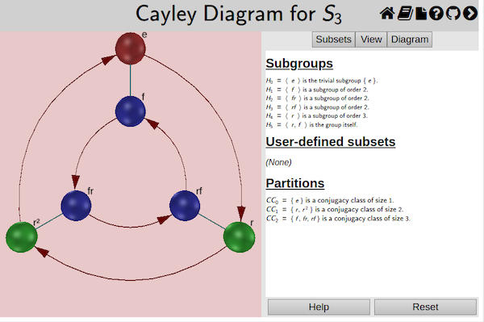

Manipulating Cayley Diagrams
The Cayley diagram is the clearest visualizer for depicting groups as sets with structure. They also clearly show the group as acting on itself. Here we will concentrate on the basic manipulations you might want to perform on a Cayley diagram as you investigate that group.
For more introductory information on Cayley diagrams, refer to the definition of a Cayley diagram or a quick introduction to Cayley diagrams. For more complete information on the Cayley diagram interface, refer to the relevant section of the user manual.
Rotating
Because a Cayley diagram can be three-dimensional, you may want to rotate it around to get a better look at it from all sides. To do so, simply click and drag on the diagram.
Highlighting
You can highlight the nodes in the Cayley diagram according to properties of
the group elements they represent. This can be useful for studying different
properties of the group. Right-click on a subset in the Subsets tab of the
controls and choose from among the highlighting options – node color
 , ring around
the node
, ring around
the node  , and square around the node
, and square around the node  .
.
See the example below, which highlights each conjugacy class a different color, thereby exhibiting a class equation visually.

For more full documentation on the Subsets tab, refer to the relevant section of the user manual.
Chunking
To help you better visualize the cosets of a particular subgroup, you can proceed by a two-step process. First, choose generators in the generator table at the top of the Diagram tab so that your subgroup’s generators are first in the table. Then choose your subgroup from the list at the bottom of that tab to visually separate the cosets of your subgroup with translucent gray boxes.

The Diagram tab and the generator table are quite intricate. For full details, refer to the documentation on the interface for Cayley diagrams.